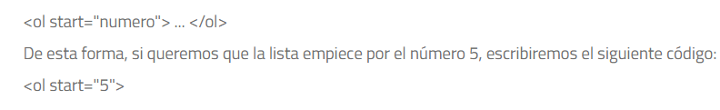

Tipos Listas en HTML
Listas Ordenadas
Las listas en HTML ordenadas son aquellas que nos muestran los elementos de la lista en orden. Para
representar el orden tendremos los elementos numerados. Es decir, cada uno de los elementos irá
precedido de un número o letra que establezca su orden.
Las listas en HTML ordenadas se representan mediante el elemento
Numero de inicio de la lista: start
El atributo start nos permite indicar el número por el cual queremos que empiece la lista, ya que por defecto las listas ordenadas en HTML empiezan por el número 1.Ejemplo
Listas Desordenadas
Las listas desordenadas en HTML nos sirven para mostrar los elementos sin ningún tipo de orden,
simplemente precedidos por una viñeta que puede ser un punto, un cuadrado.
Para definir una lista desordenada en HTML utilizamos el elemento ul.